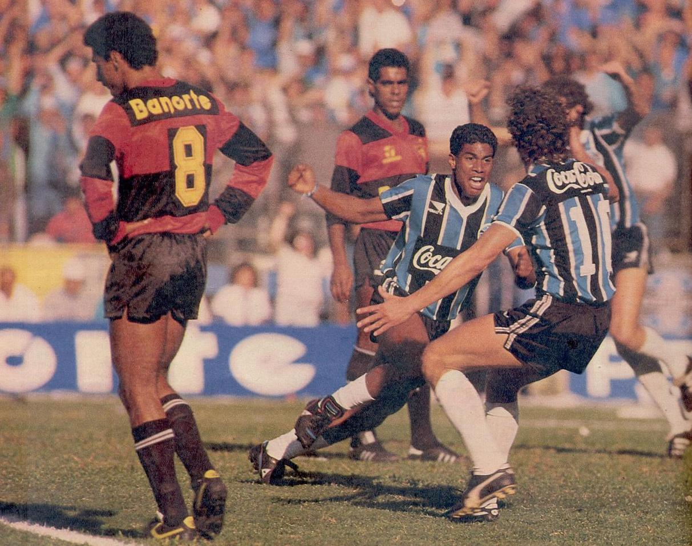
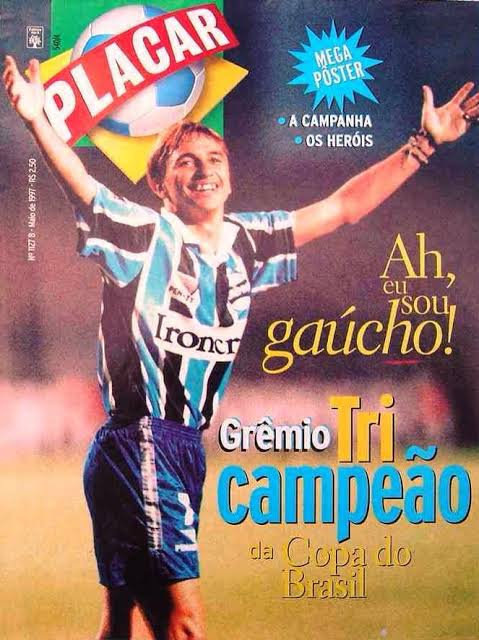
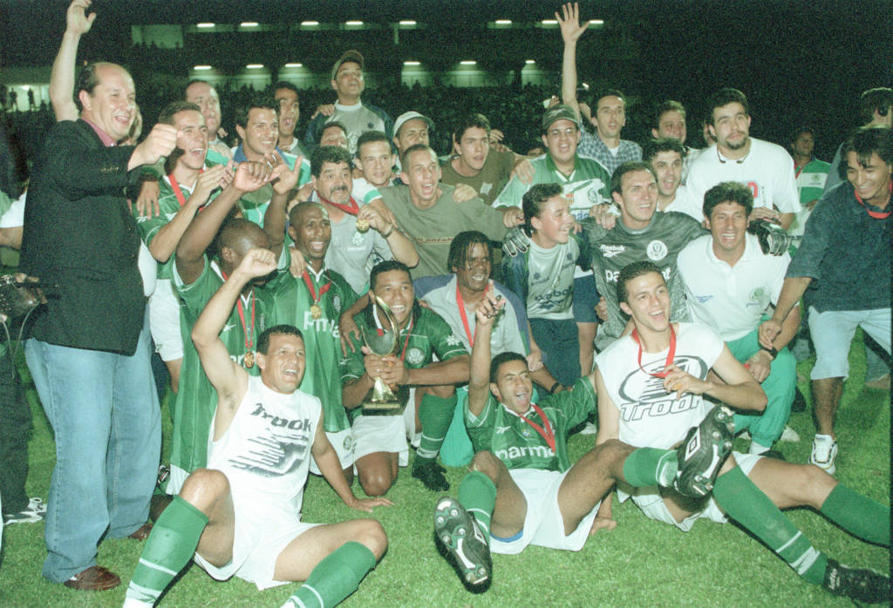
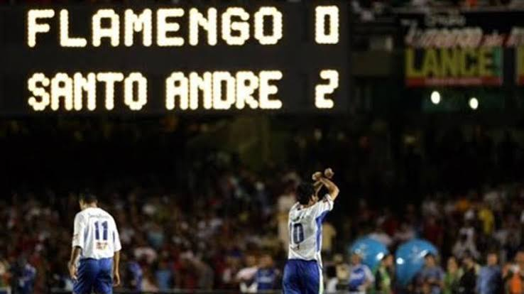
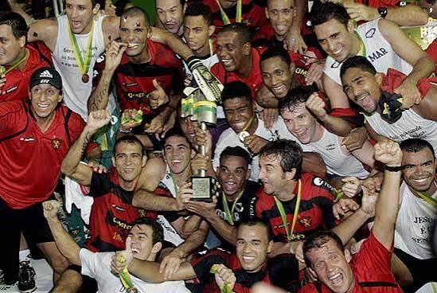
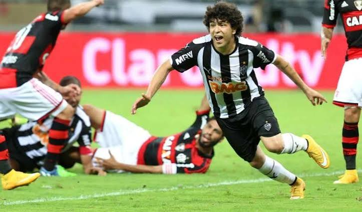
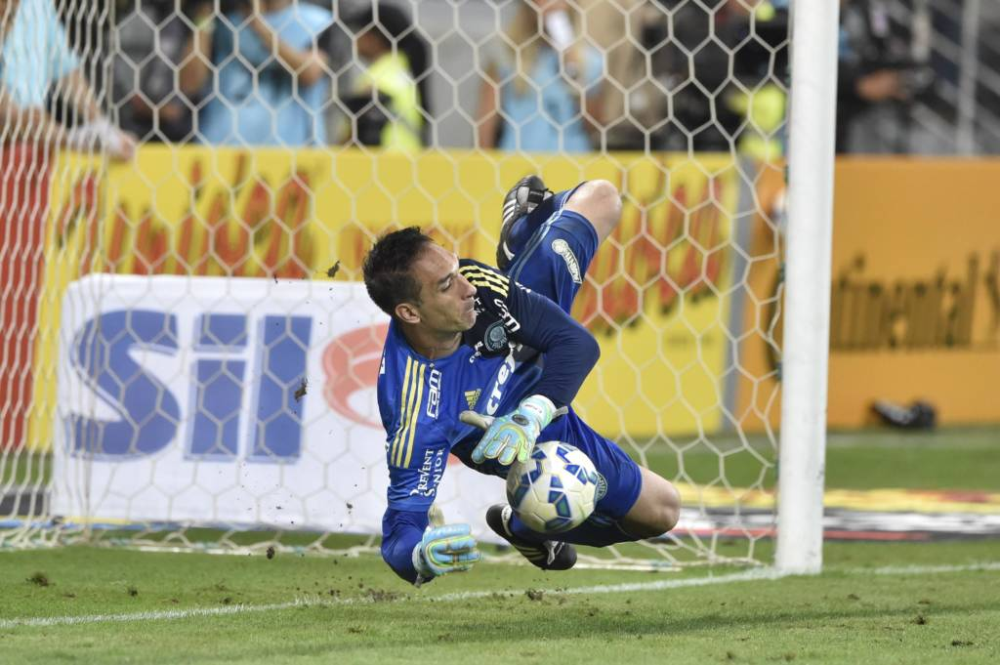
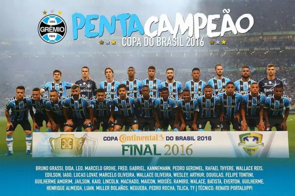
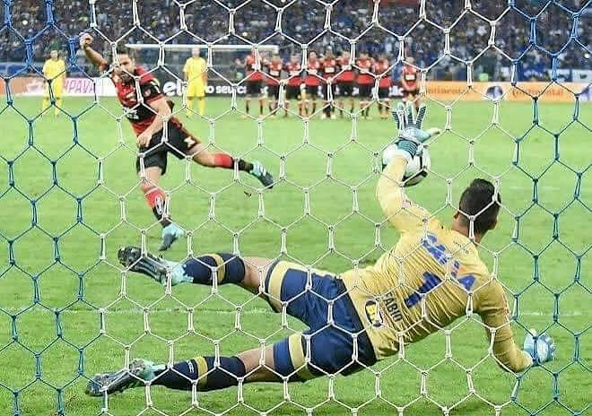
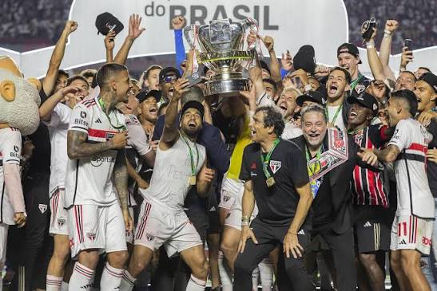

1989
Campeão: Grêmio
Vice: Sport
Conheça a história da Copa do Brasil, descubra todos os clubes campeões e veja quais equipes conquistaram mais títulos.
Conhecer os campeões
Criada em 1989 pela CBF para democratizar o futebol nacional, a competição reúne clubes de todos os estados do país em formato mata-mata.
A primeira edição contou com 32 clubes campeões e vices dos campeonatos estaduais. O Grêmio conquistou o título invicto ao vencer o Sport na final.
Durante 12 anos, devido ao conflito de datas no primeiro semestre, os clubes brasileiros que disputavam a Copa Libertadores não podiam participar da Copa do Brasil no mesmo ano.
Em 2013, a competição mudou de formato e passou a ser disputada ao longo de todo o ano (de março a novembro), permitindo o retorno dos times da Libertadores e ampliando o torneio para mais de 80 clubes.
A partir de 2018, o critério de desempate por gol marcado fora de casa foi extinto, aumentando as decisões nos pênaltis e consolidando o torneio como o mais lucrativo do país.
Viradas épicas, finais eletrizantes e decisões que marcaram para sempre a história da Copa do Brasil.

Na edição de estreia do torneio, o Grêmio levantou a taça sem perder nenhuma partida. Depois de empatar por 0 a 0 fora de casa com o Sport, venceu por 2 a 1 no Olímpico com gol decisivo de Cuca.

Diante de mais de 95 mil torcedores do Flamengo no Maracanã, o Grêmio empatou um jogaço por 2 a 2 — com gol decisivo de Carlos Miguel nos minutos finais — e conquistou o tricampeonato invicto pelo critério do gol marcado fora de casa.

Depois de perder o primeiro jogo por 1 a 0 no Mineirão, o Palmeiras venceu por 2 a 0 no Morumbi com um gol de falta histórico de Oséas quase sem ângulo no final da partida.

Disputando a Série B na época, o Santo André protagonizou uma das maiores surpresas do futebol brasileiro ao derrotar o Flamengo por 2 a 0 em pleno Maracanã, após empate por 2 a 2 no jogo de ida.

Após perder por 3 a 1 para o Corinthians no Morumbi, o Sport precisava vencer sem sofrer gols em casa. O triunfo por 2 a 0 no Recife deu ao clube pernambucano seu primeiro título nacional pelo critério do gol fora de casa.

O Atlético-MG protagonizou uma campanha cinematográfica ao reverter duas derrotas de 2 a 0 — primeiro contra o Corinthians nas quartas e depois contra o Flamengo na semifinal — vencendo ambos os jogos de volta por 4 a 1 no Mineirão antes de derrotar o rival Cruzeiro na final.

Em uma decisão tensa no Allianz Parque, o Palmeiras devolveu o placar contra o Santos vencendo por 2 a 1 no tempo normal e garantiu o tricampeonato nas penalidades, com defesa e cobrança decisiva do goleiro Fernando Prass.

Comandado por Renato Portaluppi, o Grêmio quebrou um longo jejum de títulos nacionais ao atropelar o Atlético-MG por 3 a 1 no Mineirão e confirmar o pentacampeonato com empate por 1 a 1 na Arena.

Após dois empates (1 a 1 no Maracanã e 0 a 0 no Mineirão), o Cruzeiro superou o Flamengo nos pênaltis por 5 a 3, com defesa decisiva do goleiro Fábio na cobrança de Diego.

Após décadas buscando a única taça que faltava em sua galeria, o São Paulo venceu o Flamengo por 1 a 0 no Maracanã e segurou o empate por 1 a 1 no Morumbi com um golaço de Rodrigo Nestor nos acréscimos do primeiro tempo.
Pesquise pelo nome de um clube ou pelo ano da conquista. Clique em qualquer edição para ver os placares e a foto do campeão.
Campeão: Grêmio
Vice: Sport
Campeão: Flamengo
Vice: Goiás
Campeão: Criciúma
Vice: Grêmio
Campeão: Internacional
Vice: Fluminense
Campeão: Cruzeiro
Vice: Grêmio
Campeão: Grêmio
Vice: Ceará
Campeão: Corinthians
Vice: Grêmio
Campeão: Cruzeiro
Vice: Palmeiras
Campeão: Grêmio
Vice: Flamengo
Campeão: Palmeiras
Vice: Cruzeiro
Campeão: Juventude
Vice: Botafogo
Campeão: Cruzeiro
Vice: São Paulo
Campeão: Grêmio
Vice: Corinthians
Campeão: Corinthians
Vice: Brasiliense
Campeão: Cruzeiro
Vice: Flamengo
Campeão: Santo André
Vice: Flamengo
Campeão: Paulista
Vice: Fluminense
Campeão: Flamengo
Vice: Vasco
Campeão: Fluminense
Vice: Figueirense
Campeão: Sport
Vice: Corinthians
Campeão: Corinthians
Vice: Internacional
Campeão: Santos
Vice: Vitória
Campeão: Vasco
Vice: Coritiba
Campeão: Palmeiras
Vice: Coritiba
Campeão: Flamengo
Vice: Athletico-PR
Campeão: Atlético-MG
Vice: Cruzeiro
Campeão: Palmeiras
Vice: Santos
Campeão: Grêmio
Vice: Atlético-MG
Campeão: Cruzeiro
Vice: Flamengo
Campeão: Cruzeiro
Vice: Corinthians
Campeão: Athletico-PR
Vice: Internacional
Campeão: Palmeiras
Vice: Grêmio
Campeão: Atlético-MG
Vice: Athletico-PR
Campeão: Flamengo
Vice: Corinthians
Campeão: São Paulo
Vice: Flamengo
Campeão: Flamengo
Vice: Atlético-MG
Campeão: Corinthians
Vice: Vasco
Envie sua dúvida, sugestão ou opinião sobre o site.